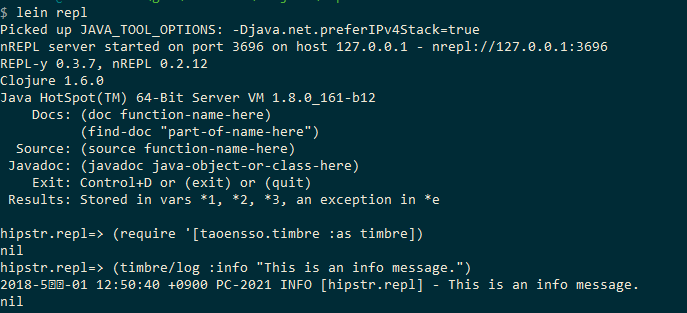
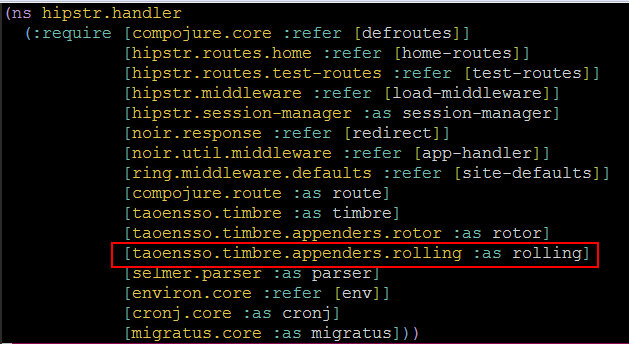
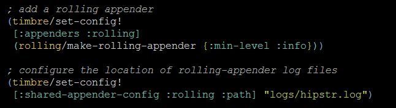

Logging
Table of Contents
1 Timbre?
- 탬버는 로깅을 위한 클로저 라이브러리이다.
- 참고로 탬버는 영단어로 '음색'이라는 뜻이 있다.
- 빠르고, 오버헤드가 적고, 다양한 재밌는 어펜더를 제공한다.
- 무엇보다 설정이 다른 로깅 라이브러리에 비해 쉽다.
2 어펜더란?
- 어펜더는 목적지에 로깅 구문을 전달하는 프로그램이다.
- 예를들어, 파일에 로깅 구문을 저장하는 것은 file 어펜더, 몽고 DB에 저장하는 것은 몽고DB 어펜더 라는 식이다.
- 간단하게 writer 라고 이해하면 된다.
3 Timbre 어펜더 설정하기
- timbre/set-config! 펑션에서 설정을 변경할 수 있다.
- handler.clj의 init펑션에서 해당 설정 코드를 볼 수 있다.
- rotor 어펜더 설정을 볼 수 있는데, 해당 어펜더는 특정 파일 사이즈를 넘어가면 새로운 로그파일을 만들고 기록해준다.
4 Timbre 로그 레벨
- 로그 레벨에는 중요도(severity)가 있는데, 낮은 것부터 높은 순으로 7개가 있다.
- :trace < :debug < :info < :warn < :error < :fatal < :report 순서
- 로그 레벨에 따라 별도의 어펜더를 설정할 수도 있다.
- 예를 들면, :info 레벨은 파일에 출력하고, :fatal 레벨의 로그는 메일로 보내는 등의 설정을 할 수 있다.
위 동작은 각 어펜더 설정에서 :min-level을 설정해주면 된다.
5 어펜더에 설정할 수 있는 키
- 당연한 이야기지만 설정에서 사용하는 키는 Timbre에서 제공하는 키만 사용할 수 있다.
- github 의 timbre 저장소에서 설정 가능한 키들을 볼 수 있다.
- https://github.com/ptaoussanis/timbre#configuration
6 실습 : Timbre 로 로그 출력하기
lein repl (require '[taoensso.timbre :as timbre]) (timbre/log :info "This is an info message.")

7 실습 : 롤링 어펜더 추가하기
- Rolling 어펜더를 추가하는 실습을 해본다.
- Rolling 어펜더는 매일 날짜를 붙여서 새로운 로그파일을 생성해주는 파일 어펜더이다.
7.1 로그를 저장할 디렉토리 생성
hipstr 의 루트 디렉토리에서 mkdir logs
7.2 hipstr.handler 네임스페이스에 rolling 어펜더를 사용하겠다고 설정

7.3 init 펑션안에 다음 rolling 어펜더 설정을 추가
